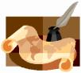

Calvary Academics Curriculum
Christian Ministry (Mentoring for Certificate in Discipleship, Christian Life Certificate, Christian Life Diploma, Diploma in Shepherding. We offer short courses which students can offer as prior learning for an RPL Bachelor of Ministry, B.Min (Honours), Master of Ministry, Doctor of Ministry and PhD) at accredited institutions.
Calvary Life Tutors has developed a mentoring process suitable for those Churches who emphasize the role of the five-fold ministry as the equippers of the saints to do the work of ministry — to be obedient to the Great Commission.
Outcomes of the Mentoring Process
(We mentor students who have registered at an e-learning university for their registered qualifications: from Diploma to Doctorate).
Diploma and Bachelor: A member who is able to MINISTER, is able to DUPLICATE himself and can MANAGE others.
Masters level: ... who has specialized knowledge and can do independent research ... Doctoral: ... who has done research, is an expert in his field and has made a contribution to the field of Ministry.
The Ministry programme is aimed at church members for discipleship, to train workers and leaders. This balanced programme incorporates Bible training, ministry and life skills suitable for ministry. It offers e-learning components on DVD.
A Rural programme for mentoring mature but unqualified pastors in Africa as a very basic qualification for the shepherding ministry. Used mainly by missionaries — not available in South Africa.
Counselling courses with a balanced combination of Biblical counselling, a range of suitable academic courses and ministry training.
Management courses for industry leadership or adminstrators of the modern church or CEO of a Tuition Centre/Bible School.
Contact us today for more information
Postal Address:
Calvary Life Tutors
P.O. Box 13468
0129 Sinoville, Pretoria,
South Africa
Email: orders (at) clt.org.za
Note: CLT does not offer any programmes or unit standards, nor does it confer degrees of whole programmes. CLT is widely regarded (including government officials) as being on the forefront of Mentoring in South Africa. CLT has pioneered "Ministry training" and now also "e-learning" in SA.